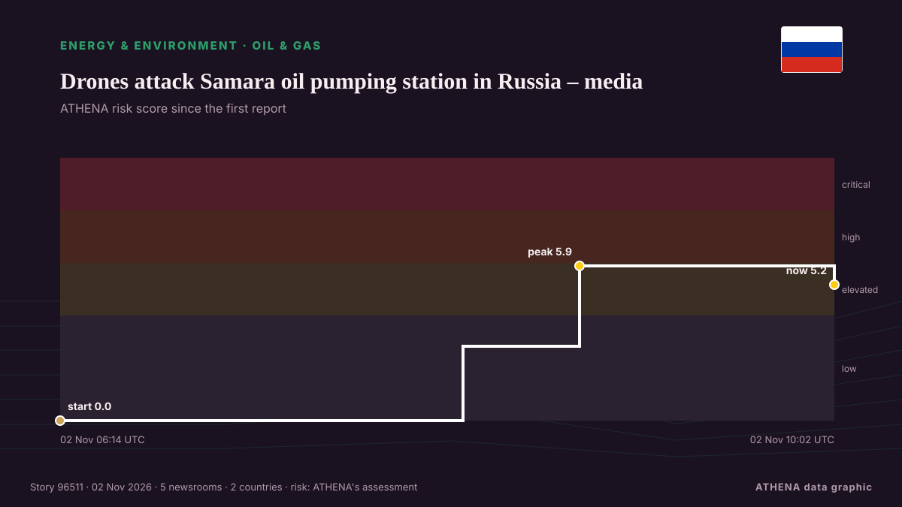

Öl und Gas
| 20. Okt. | 0 |
|---|---|
| 21. Okt. | 0 |
| 22. Okt. | 0 |
| 23. Okt. | 0 |
| 24. Okt. | 0 |
| 25. Okt. | 2 |
| 26. Okt. | 2 |
| 27. Okt. | 0 |
| 28. Okt. | 0 |
| 29. Okt. | 4 |
| 30. Okt. | 3 |
| 31. Okt. | 3 |
| 1. Nov. | 5 |
| 2. Nov. | 4 |
Schlagzeilen werden auf Englisch angezeigt, wie veröffentlicht.

Drones attack Samara oil pumping station in Russia – media
Russia's Samara region came under a drone attack early on November 2. von Ukrinform (English)
Venture Global launches commercial ops of first Plaquemines LNG phase
US LNG exporter Venture Global has started commercial operations of the first phase of its second LNG export project, Plaquemines LNG, and LNG sales to the first phase’s long-term customers. von LNG Prime
UAE condemns attack on Qatar’s LNG carrier in Gulf
Qatar Gas Transport Company says no crew members injured, vessel remains safe and operational following Friday evening incident. von Anadolu Agency (English)
Oil prices decline on global markets
The financial performance of the sector is driven by global prices, coal export volumes and fluctuations in the ruble exchange rate, Dmitry Islamov said. von TASS (English)
November fuel price outlook: Here’s what you’re likely to pay for petrol and diesel from Wednesday
Petrol and diesel prices are expected to fall from Wednesday, thanks to temporary fuel levy cuts. von IOL
Crude prices fall from six-month highs; WTI stands at $101 per barrel, Brent costs $115
Oil prices experienced a decline of over 1% after hitting six-month peaks, primarily due to geopolitical unrest in Saudi Arabia. von Times of India
US fighter jets carry out airstrikes on Syria’s Homs
TEHRAN, Nov. 01 (MNA) – A media outlet has reported that 'American warplanes struck Homs in Syria’ on Sunday. von Mehr News (English)
Tyrone toddler treated in hospital after being burned by firework
The incident happened in Co Tyrone as fireworks were thrown outside a petrol station. von The Irish News (Belfast)
Russia says drone hit 'industrial enterprise' near Moscow, Kyiv claims hit major refinery
Russia announced that a drone hit an industrial area near Moscow, while Ukraine claimed responsibility for targeting a major refinery in the region. von Arab News
Vietnam cuts gasoline tax to zero, prices fall from November 1
Vietnam has cut the special consumption tax on all types of gasoline to zero from November 1, 2026, bringing down retail gasoline prices as the government seeks to ease costs and curb inflation. von Tuoi Tre News
Fuel subsidies in Greece: Heating oil, diesel and petrol discounts extended through November 15
Government support will remain at the levels applied during the second half of October – The extension is expected to cost €35 million in the first half of November. von ProtoThema English
Azerbaijani oil surges past $126 per barrel as Iran tensions drive global prices higher
The price of Azerbaijan's Azeri Light crude oil has climbed to $126.16 per barrel in the European market, rising by $3.88, or 3.2%, amid renewed concerns over potential US military strikes against… von AzerNews
Tankers defy sharp escalation of Iranian attacks to keep crude oil flowing through Strait of Hormuz
Soaring freight rates are giving tankers a big financial incentive to run the gauntlet through the Strait of Hormuz. von CNBC World
UAE petrol prices set to change in November after fuel costs surge nearly 80% in 2026
UAE petrol prices for November 2026 are due to be announced after increases of up to 80% since January. von Arabian Business
Kirkuk Residents Demand Dissolution of Provincial Council
Kirkuk residents from all communities rallied on Oct. von Kurdistan24 (English)
ST LNG Project Offshore Texas Clears Key Regulatory Hurdle
QatarEnergy has developed a new strategy to further build its global LNG portfolio with long-term offtake from other suppliers to generate revenue if exports are disrupted in the Strait of Hormuz in… von Natural Gas Intelligence
ExxonMobil and Chevron top estimates for Q3 as Americans feel gas price pain
Business is booming for two biggest US oil companies, with both benefiting from higher prices and record production ExxonMobil and Chevron both reported better than expected quarterly results on… von The Guardian
New Jersey governor threatens to block Russian diesel shipments to US
Mikie Sherrill said US President Donald Trump is not doing anything to lower gasoline and diesel prices. von TASS (English)
US touts role in Gulf oil exports as CENTCOM chief flies over Hormuz Strait
LONDON: The chief of US Central Command, Brad Cooper, flew over the Strait of Hormuz in a CH-47 Chinook helicopter on Sunday as the command said US forces had helped Gulf partners export more than… von Arab News